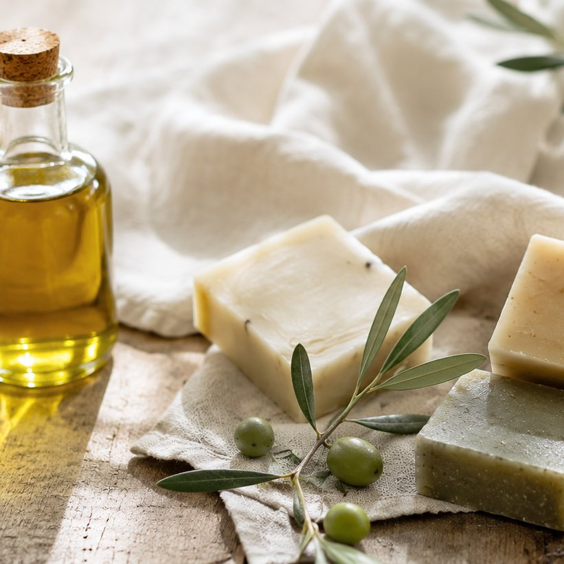
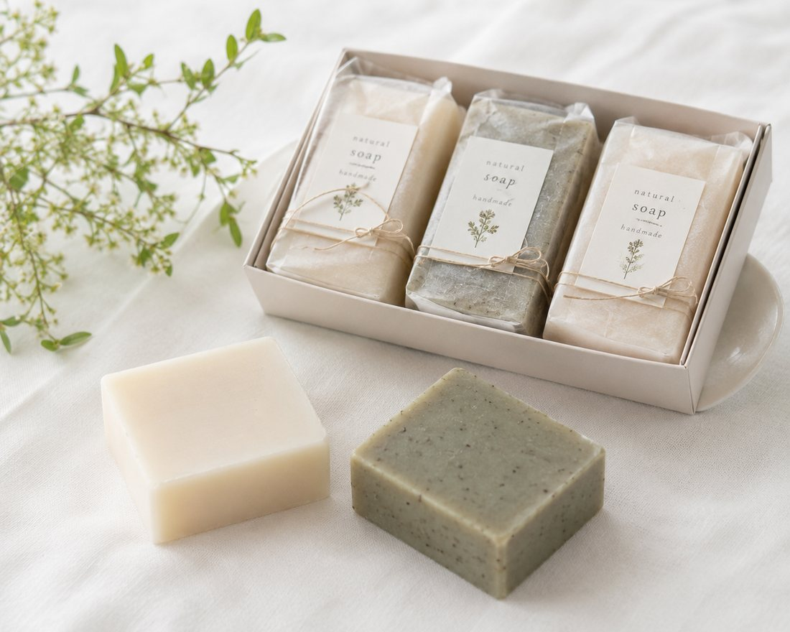
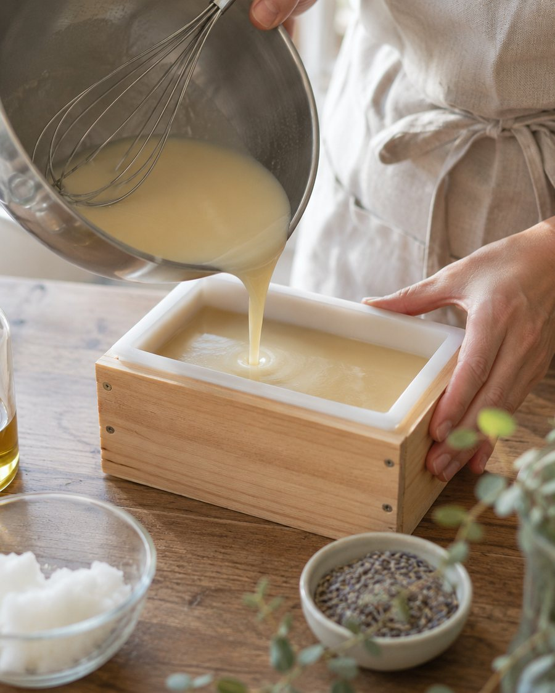

オリーブとハーブ、2種類のミニ石鹸のセットです。肌に合うか、香りが好みか。小さなサイズで、ゆっくり確かめてから選んでください。
ミニ石鹸 2種（各30g）
送料は全国一律520円

2種ミニサイズ大きなサイズを買って、肌に合わなかったら、もったいない。
成分表を見ても、何が入っているのか、よく分からない。
香りが強すぎないか、使ってみないと分からない。
だから、はじめの一回は小さなサイズで。

オリーブオイルを中心にした、香料を加えていないタイプ。まずは香りのないものから、という方に。
自家栽培のカレンデュラと、ラベンダーの精油を加えています。香りは、ほのかに感じる程度です。
ほかに、全成分を書いたしおりと、使い方のメモを同封します。
入っているものを、すべて書いています。むずかしい名前には、ひと言を添えました。
配合量の多い順に記載
配合量の多い順に記載
※成分の表示は、制作サンプル用の架空のものです。

オリーブオイルとヤシ油を、その日の分だけ量ります。
温度を見ながら、とろみが出るまで手で混ぜ続けます。
木の型に流し込み、一日おいて固めます。
切り分けたあと、風通しのよい棚で、ゆっくり乾かします。
手のひらか泡立てネットで、たっぷりの泡を作ります。
はじめは、腕の内側など目立たないところに泡をのせて洗い流し、しばらく様子を見てください。
使ったあとは、水はけのよいお皿に。濡れたままだと、溶けやすくなります。
すべての方の肌に合うとは限りません。赤みやかゆみなど、合わないと感じたときは、使うのをやめてください。
各30g ／ 全成分のしおり・使い方のメモつき
送料：全国一律520円 お支払い：銀行振込・クレジットカード
お試しセットを注文する| オリーブ石鹸（90g） | 1,200円 |
| ハーブ石鹸（90g） | 1,400円 |
| ギフトセット（3種） | 3,200円 |
定期購入ではありません。一回ずつのご注文です。
※商品・価格は、制作サンプル用の架空のものです。
成分にひとつずつ説明が書いてあって、何が入っているのかが分かったのが、決め手になりました。最初は無香料のほうから使っています。
40代・会社員香りの強いものが苦手なので、ミニサイズで試せたのがありがたかったです。ハーブのほうも、思っていたよりやさしい香りでした。
30代・パート※お客様の声は、制作サンプル用の架空のものです。
すべての方の肌に合うとは限りません。はじめは腕の内側などで少しだけ試し、様子を見てからお使いください。気になる成分があれば、全成分の表示をご確認ください。
はい、顔と体のどちらにもお使いいただけます。目に入らないよう、ご注意ください。
使い方によりますが、毎日の洗顔で、2〜3週間ほどが目安です。
なりません。お試しセットは一回きりのご注文で、その後の自動のお届けはありません。
商品に不良があった場合のみ、到着から7日以内にご連絡ください。お客様のご都合による返品は、お受けしていません。